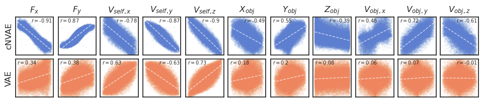
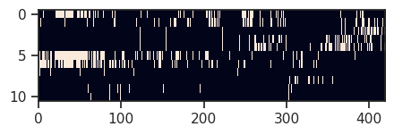

Fig: MI#
# HIDE CODE
import os, sys
from IPython.display import display
# tmp & extras dir
git_dir = os.path.join(os.environ['HOME'], 'Dropbox/git')
extras_dir = os.path.join(git_dir, 'jb-MTMST/_extras')
fig_base_dir = os.path.join(git_dir, 'jb-MTMST/figs')
tmp_dir = os.path.join(git_dir, 'jb-MTMST/tmp')
# GitHub
sys.path.insert(0, os.path.join(git_dir, '_MTMST'))
from vae.train_vae import TrainerVAE, ConfigTrainVAE
from vae.vae2d import VAE, ConfigVAE
from figures.fighelper import *
from analysis.glm import *
# warnings, tqdm, & style
warnings.filterwarnings('ignore', category=DeprecationWarning)
from rich.jupyter import print
%matplotlib inline
set_style()
from base.dataset import ROFLDS
from analysis.linear import compute_dci, mi_analysis
kws_fig = {
'transparent': True,
'bbox_inches': 'tight',
'dpi': 300,
}
skip_fits = [
'fixate2_nf-420_beta-0.15_(2023_04_27,13:57).npy',
'fixate1_nf-420_beta-0.8_(2023_05_07,04:15).npy',
]
pal_model, pal_cat = get_palette()
# load dataset
category = 'fixate1'
g, g_tst, select_i, select_lbl = prep_rofl(category)
path = pjoin(tmp_dir, 'trainer_analysis')
fits = [
'fixate1_nf-420_beta-0.15_(2023_04_27,20:20).npy',
'vanilla_fixate1_nf-420_beta-1.5_(2023_05_14,14:16).npy',
]
everything = {}
for fit in fits:
everything[fit] = np.load(
pjoin(path, fit),
allow_pickle=True,
).item()
from figures.dci import plot_scatter
fig, _ = plot_scatter(everything)

fig.savefig(pjoin(fig_base_dir, 'untang_300.png'), **kws_fig)
kws_fig['dpi'] = 600
fig.savefig(pjoin(fig_base_dir, 'untang_600.png'), **kws_fig)
Now mi#
%%time
mi = {}
for fit, v in everything.items():
mi[fit] = mi_analysis(v['data_vld']['z'], g)
data = {
extract_info(k)[-1]: v['mi']
for k, v in mi.items()
}
CPU times: user 35.7 s, sys: 31.5 s, total: 1min 7s
Wall time: 5min 53s
fig, _ = plot_hm(data)
fig.savefig(pjoin(fig_base_dir, 'mi.pdf'), **kws_fig)
fig.savefig(pjoin(fig_base_dir, 'mi.png'), **kws_fig)
Load for quickness#
jake = np.load(pjoin(tmp_dir, 'jake_mi.npy'), allow_pickle=True).item()
mi_cnvae = jake['fixate1_nf-420_beta-0.15_(2023_04_27,20:20).npy']
mi_vae = jake['vanilla_fixate1_nf-420_beta-1.5_(2023_05_14,14:16).npy']
fig, axes = create_figure(2, 1, (9.7, 5), 'all', 'all', layout='constrained')
axes[0].imshow(mi_cnvae, aspect=9, vmin=0, vmax=0.5, cmap='rocket')
axes[1].imshow(mi_vae, aspect=9, vmin=0, vmax=0.5, cmap='rocket')
axes[1].locator_params(axis='x', nbins=40)
props = dict(boxstyle='round', facecolor='none', edgecolor='none', alpha=0.5)
fig, axes = create_figure(2, 11, (9.7, 1.95), sharex='col', layout='constrained')
for i, (fit, r) in enumerate(corrs.items()):
category, nf, beta, tag = _info(fit)
inds = np.argmax(np.abs(r), axis=1)
for j in range(11):
_x = g[:, j]
_y = everything[fit]['data_vld']['z'][:, inds[j]]
_y = sp_stats.zscore(_y)
sns.scatterplot(
x=_x,
y=_y,
color=pal_model[tag],
s=1,
alpha=0.05,
ax=axes[i, j],
)
axes[i, j].text(
x=0.05 if r[j, inds[j]] > 0 else 0.5,
y=0.98,
s=r'$r = $' + str(np.round(r[j, inds[j]], 2)),
transform=axes[i, j].transAxes,
verticalalignment='top',
fontsize=6,
bbox=props,
)
if j == 0:
axes[i, j].set_ylabel(tag)
if i == 0:
axes[i, j].set_title(
label2latex[select_lbl[j]],
y=1.02,
)
remove_ticks(axes, full=False)
ax_square(axes)
plt.show()
_y.shape
(75000,)
props = dict(boxstyle='round', facecolor='none', edgecolor='none', alpha=0.5)
fig, axes = create_figure(2, 11, (20, 4), sharex='col', layout='constrained')
for i, (fit, r) in enumerate(corrs.items()):
category, nf, beta, tag = _info(fit)
inds = np.argmax(np.abs(r), axis=1)
for j in range(11):
_x = g[:, j]
_y = everything[fit]['data_vld']['z'][:, inds[j]]
_y = sp_stats.zscore(_y)
sns.scatterplot(
x=_x,
y=_y,
color=pal_model[tag],
s=1,
alpha=0.05,
ax=axes[i, j],
)
axes[i, j].text(
x=0.05 if r[j, inds[j]] > 0 else 0.5,
y=0.98,
s=r'$r = $' + str(np.round(r[j, inds[j]], 2)),
transform=axes[i, j].transAxes,
verticalalignment='top',
fontsize=6,
bbox=props,
)
if j == 0:
axes[i, j].set_ylabel(tag)
if i == 0:
axes[i, j].set_title(
label2latex[select_lbl[j]],
y=1.02,
)
ax_square(axes)
plt.show()
fig, axes = create_figure(2, 11, (9.5, 2), sharex='col', sharey='row', layout='constrained')
for i, (fit, r) in enumerate(corrs.items()):
category, nf, beta, tag = _info(fit)
inds = np.argmax(np.abs(r), axis=1)
for j in range(11):
_x = g[:, j]
_y = everything[fit]['data_vld']['z'][:, inds[j]]
_y = sp_stats.zscore(_y)
sns.histplot(
x=_x,
y=_y,
bins=20,
color=pal_model[tag],
ax=axes[i, j],
)
axes[i, j].annotate(
text=r'$r = $' + str(np.round(r[j, inds[j]], 2)),
xy=(0.05 if r[j, inds[j]] > 0 else 0.5, 0.87),
xycoords='axes fraction',
fontsize=6,
)
if j == 0:
axes[i, j].set_ylabel(tag)
if i == 0:
axes[i, j].set_title(
label2latex[select_lbl[j]],
y=1.02,
)
axes[0, 0].set_ylim(-3, 3)
axes[1, 0].set_ylim(-3, 3)
remove_ticks(axes, False)
ax_square(axes)
plt.show()
fig, axes = create_figure(2, 11, (9.5, 2), sharex='col', sharey='row', layout='constrained')
for i, (fit, r) in enumerate(corrs.items()):
category, nf, beta, tag = _info(fit)
inds = np.argmax(np.abs(r), axis=1)
for j in range(11):
_x = g[:, j]
_y = everything[fit]['data_vld']['z'][:, inds[j]]
_y = sp_stats.zscore(_y)
sns.scatterplot(
x=_x,
y=_y,
s=5,
alpha=0.05,
# bins=20,
color=pal_model[tag],
ax=axes[i, j],
)
axes[i, j].annotate(
text=r'$r = $' + str(np.round(r[j, inds[j]], 2)),
xy=(0.05 if r[j, inds[j]] > 0 else 0.5, 0.87),
xycoords='axes fraction',
fontsize=6,
)
if j == 0:
axes[i, j].set_ylabel(tag)
if i == 0:
axes[i, j].set_title(
label2latex[select_lbl[j]],
y=1.02,
)
axes[0, 0].set_ylim(-3, 3)
axes[1, 0].set_ylim(-3, 3)
remove_ticks(axes, False)
ax_square(axes)
plt.show()
list(mi)
['fixate1_nf-420_beta-0.15_(2023_04_27,20:20).npy',
'vanilla_fixate1_nf-420_beta-1.5_(2023_05_14,14:16).npy']
v = mi['fixate1_nf-420_beta-0.15_(2023_04_27,20:20).npy']
v
{'mi': array([[6.93054166e-03, 2.56845659e-02, 1.71403040e-02, ...,
1.81879572e-02, 4.77212287e-03, 2.24173316e-02],
[7.38940497e-03, 3.54146761e-03, 1.23351900e-01, ...,
4.06223600e-02, 3.84289488e-03, 4.56894111e-02],
[2.67499537e-03, 1.71302130e-03, 0.00000000e+00, ...,
6.25285279e-02, 2.28259366e-01, 6.90657896e-02],
...,
[2.45522146e-03, 4.18361994e-03, 3.35409463e-03, ...,
6.69445174e-03, 4.03010842e-03, 1.51740703e-04],
[3.39297760e-03, 1.04007310e-02, 0.00000000e+00, ...,
9.59846823e-03, 0.00000000e+00, 5.45959324e-03],
[0.00000000e+00, 0.00000000e+00, 4.45528914e-03, ...,
0.00000000e+00, 0.00000000e+00, 2.74509636e-03]]),
'mi_norm': array([[0.00302545, 0.00859701, 0.00347504, ..., 0.00645162, 0.00120844,
0.00690005],
[0.00219177, 0.00180246, 0.0303506 , ..., 0.012732 , 0.00231513,
0.01615009],
[0.00059609, 0.00161746, 0.00098516, ..., 0.02077538, 0.07479324,
0.02107351],
...,
[0.00101689, 0.00313953, 0.00167065, ..., 0.00209444, 0.001068 ,
0.00112792],
[0.00143524, 0.0036783 , 0.0018995 , ..., 0.00358527, 0.0010151 ,
0.00265545],
[0.00100912, 0.00289565, 0.00155856, ..., 0.0010696 , 0.00103946,
0.00107405]]),
'mig': array([0.0203127 , 0.02455653, 0.03579175, 0.14304934, 0.18327507,
0.03076485, 0.02155971, 0.00113731, 0.00890059, 0.04520607,
0.04971993])}
fig, axes = create_figure(2, 1, (10, 4.5), 'all', 'all', layout='constrained')
for i, (fit, v) in enumerate(mi.items()):
axes[i].imshow(v['mi'], aspect=9, vmin=0, vmax=0.5)
axes[1].locator_params(axis='x', nbins=40)
axes[0].set(yticks=range(len(label2latex)), yticklabels=list(label2latex.values()))
axes[1].set(yticks=range(len(label2latex)), yticklabels=list(label2latex.values()))
for i in range(1, 21):
val = i * 20 - 0.5
if i in [3, 9]:
ls = '-'
alpha = 0.8
else:
ls = '--'
alpha = 0.4
axes[0].axvline(val, color='silver', ls=ls, lw=0.8, alpha=alpha)
for i in range(11):
for ax in axes.flat:
ax.axhline(i + 0.5, color='silver', ls='--', lw=0.8, alpha=0.4)
plt.show()
fig, axes = create_figure(2, 1, (10, 4.5), 'all', 'all', layout='constrained')
for i, (fit, v) in enumerate(mi.items()):
axes[i].imshow(v['mi'], aspect=9, vmin=0, vmax=0.5, cmap='PuBuGn')
axes[1].locator_params(axis='x', nbins=40)
axes[0].set(yticks=range(len(label2latex)), yticklabels=list(label2latex.values()))
axes[1].set(yticks=range(len(label2latex)), yticklabels=list(label2latex.values()))
for i in range(1, 21):
val = i * 20 - 0.5
if i in [3, 9]:
ls = '--'
alpha = 0.4
else:
ls = '--'
alpha = 0.4
axes[0].axvline(val, color='k', ls=ls, lw=0.8, alpha=alpha)
for ax in axes.flat:
for i in range(11):
ax.axhline(i + 0.45, color='k', ls='--', lw=0.8, alpha=0.4)
plt.show()
fig, axes = create_figure(2, 1, (10, 4.5), 'all', 'all', layout='constrained')
for i, (fit, v) in enumerate(jake.items()):
axes[i].imshow(v, aspect=9, vmin=0, vmax=0.5, cmap='bone_r')
axes[1].locator_params(axis='x', nbins=40)
axes[0].set(yticks=range(len(label2latex)), yticklabels=list(label2latex.values()))
axes[1].set(yticks=range(len(label2latex)), yticklabels=list(label2latex.values()))
for i in range(1, 21):
val = i * 20 - 0.5
if i in [3, 9]:
ls = '--'
alpha = 0.5
else:
ls = '--'
alpha = 0.5
axes[0].axvline(val, color='dimgrey', ls=ls, lw=0.8, alpha=alpha)
for ax in axes.flat:
for i in range(0, 11):
ax.axhline(i + 0.5, color='dimgrey', ls='--', lw=0.8, alpha=0.5)
plt.show()
fig.savefig(pjoin(fig_base_dir, 'mi.pdf'), **kws_fig)
fig.savefig(pjoin(fig_base_dir, 'mi.png'), **kws_fig)
fig, axes = create_figure(2, 1, (10, 4.5), 'all', 'all', layout='constrained')
for i, (fit, v) in enumerate(jake.items()):
x2p = sp_img.zoom(v, 10, order=0, mode='nearest')
axes[i].imshow(x2p, aspect=9, vmin=0, vmax=0.5, cmap='bone_r')
axes[0].set(
yticks=np.arange(0, len(label2latex) * 10, 10),
yticklabels=list(label2latex.values()),
)
axes[1].set(
yticks=np.arange(0, len(label2latex) * 10, 10),
yticklabels=list(label2latex.values()),
xticks=np.arange(0, 420 * 10 + 1, 20 * 10),
xticklabels=np.arange(0, 420 + 1, 20),
)
for i in range(1, 21):
val = i * 20 - 0.5
if i in [3, 9]:
ls = '--'
alpha = 0.5
else:
ls = '--'
alpha = 0.5
axes[0].axvline(val * 10, color='dimgrey', ls=ls, lw=0.8, alpha=alpha)
for ax in axes.flat:
for i in range(11):
ax.axhline((i + 0.5) * 10, color='dimgrey', ls='--', lw=0.8, alpha=0.5)
plt.show()
fig.savefig(pjoin(fig_base_dir, 'mi_10.pdf'), **kws_fig)
fig, axes = create_figure(2, 1, (10, 4.5), 'all', 'all', layout='constrained')
factor = 25
for i, (fit, v) in enumerate(jake.items()):
x2p = np.repeat(np.repeat(
v, factor, axis=0), factor, axis=1)
axes[i].imshow(x2p, aspect=9, vmin=0, vmax=0.5, cmap='bone_r')
axes[0].set(
yticks=np.arange(0, len(label2latex) * factor, factor) + factor // 2,
yticklabels=list(label2latex.values()),
)
axes[1].set(
yticks=np.arange(0, len(label2latex) * factor, factor) + factor // 2,
yticklabels=list(label2latex.values()),
xticks=np.arange(0, 420 * factor + 1, 20 * factor),
xticklabels=np.arange(0, 420 + 1, 20),
)
for i in range(1, 21):
val = i * 20 - 0.5
if i in [3, 9]:
ls = '--'
alpha = 0.7
else:
ls = '--'
alpha = 0.7
axes[0].axvline(val * factor, color='dimgrey', ls=ls, lw=0.7, alpha=alpha)
plt.show()
fig.savefig(pjoin(fig_base_dir, 'mi.pdf'), **kws_fig)
fig.savefig(pjoin(fig_base_dir, 'mi.png'), **kws_fig)
v = mi['fixate1_nf-420_beta-0.15_(2023_04_27,20:20).npy']
xx = v['mi'].reshape(-1, 21, 20)
xx.shape
(11, 21, 20)
plt.imshow(xx[:, 0, :], vmin=0, vmax=0.65)
<matplotlib.image.AxesImage at 0x7fd5685ef0d0>
plt.plot(xx[:, 0, :].mean(1))
plt.plot(xx[:, 19, :].mean(1))
[<matplotlib.lines.Line2D at 0x7fd553d22b80>]
fig, ax = create_figure(1, 1, (10, 2))
ax.imshow(xx.mean(-1))
<matplotlib.image.AxesImage at 0x7fd5684c8940>
yy = xx.mean(-1)
yy.shape
(11, 21)
q = 0.9
thres = np.quantile(v['mi'], q)
active = v['mi'] > thres
plt.imshow(active, aspect=10);

x_filt = v['mi'].copy()
x_filt[~active] = np.nan
xx_filt = x_filt.reshape(-1, 21, 20)
yy_filt = np.nanmean(xx_filt, -1)
/tmp/ipykernel_909219/3909724208.py:2: RuntimeWarning: Mean of empty slice
yy_filt = np.nanmean(xx_filt, -1)
fig, ax = create_figure(1, 1, (10, 2))
ax.imshow(yy_filt, vmin=0, vmax=0.6)
<matplotlib.image.AxesImage at 0x7fd5685d8610>
plt.imshow(v['mi'][:, :20], vmin=0)
<matplotlib.image.AxesImage at 0x7fd553fd6fd0>
plt.imshow(xx_filt[:, 0, :], vmin=0)
<matplotlib.image.AxesImage at 0x7fd5536fe340>
Scatter#
q_vals = [0.5, 0.8, 0.9, 0.95, 1.0]
thresh = np.quantile(data['cNVAE'], q_vals)
df_mi = []
for i, lbl in enumerate(select_lbl):
for j in range(420):
val = data['cNVAE'][i, j]
layer = j // 20
if layer in range(3):
scale = 2
elif layer in range(3, 3 + 6):
scale = 4
else:
scale = 8
df_mi.append({
'f': [lbl] * len(q_vals),
'Mutual info.': [val] * len(q_vals),
'layer': [layer] * len(q_vals),
'scale': [scale] * len(q_vals),
'above': [val >= e for e in thresh],
'thresh': thresh,
'q': q_vals,
})
df_mi = pd.DataFrame(merge_dicts(df_mi))
_df = df_mi.loc[
(df_mi['q'] == 0.95) &
(df_mi['above'] == True)
]
fig, ax = create_figure(1, 1, (5.3, 2.5))
sns.scatterplot(data=_df, x='layer', y='f', size='Mutual info.', s=320, ax=ax)
ax.set(
yticks=range(len(LBL2TEX)),
yticklabels=list(LBL2TEX.values()),
xticks=range(21),
)
sns.move_legend(ax, None, bbox_to_anchor=(1, 1.045))
ax.tick_params(axis='x', labelsize=8)
ax.tick_params(axis='y', labelsize=10)
ax.set_xlabel('Hierarchical layer', fontsize=12)
ax.set_ylabel('')
ax.grid()
plt.show()

fig.savefig(pjoin(fig_base_dir, 'mi_scatter.pdf'), **kws_fig)
fig.savefig(pjoin(fig_base_dir, 'mi_scatter.png'), **kws_fig)
This should work (but above was better)#
xx = data['cNVAE'].reshape(-1, 21, 20)
xx.shape
(11, 21, 20)
q_vals = [0.5, 0.8, 0.9, 0.95, 1.0]
df_mi = []
for i, lbl in enumerate(select_lbl):
for j in range(420):
val = data['cNVAE'][i, j]
layer = j // 20
thresh = np.quantile(xx[:, layer, :], q_vals)
if layer in range(3):
scale = 2
elif layer in range(3, 3 + 6):
scale = 4
else:
scale = 8
df_mi.append({
'f': [lbl] * len(q_vals),
'Mutual info.': [val] * len(q_vals),
'layer': [layer] * len(q_vals),
'scale': [scale] * len(q_vals),
'above': [val >= e for e in thresh],
'thresh': thresh,
'q': q_vals,
})
df_mi = pd.DataFrame(merge_dicts(df_mi))
_df = df_mi.loc[
(df_mi['q'] == 0.95) &
(df_mi['above'] == True)
]
fig, ax = create_figure(1, 1, (5.3, 2.5))
sns.scatterplot(data=_df, x='layer', y='f', size='Mutual info.', s=320, ax=ax)
ax.set(
yticks=range(len(LBL2TEX)),
yticklabels=list(LBL2TEX.values()),
xticks=range(21),
)
sns.move_legend(ax, None, bbox_to_anchor=(1, 1.045))
ax.tick_params(axis='x', labelsize=8)
ax.tick_params(axis='y', labelsize=10)
ax.set_xlabel('Hierarchical layer', fontsize=12)
ax.set_ylabel('')
ax.grid()
plt.show()